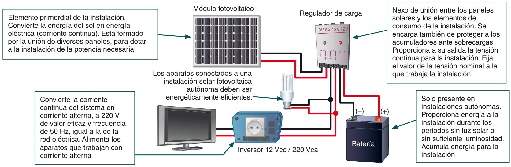

PANELES SOLARES

PODEMOS ALIMENTAR NUESTROS ELECTRODOMESTICOS Y BOMBILLAS LED

0. COMPONENTES DE UNA INSTALACIÓN SOLAR FOTOVOLTAICA
Aprenderemos a:
- Clasificar los tipos de instalaciones de energía solar.
- Identificar los principales parámetros de los paneles solares.
- Describir el funcionamiento de las baterías.
- Describir el funcionamiento del inversor y del regulador.
- La célula solar y su funcionamiento.
- Condiciones de funcionamiento de los tipos de baterías.
- Características y modo de empleo del inversor y del regulador, y sus tipos.

1. INTRODUCCIÓN A LA ENERGÍA SOLAR
La electricidad es una de las formas de energía más versátiles y que mejor se adaptan
a cada necesidad. Su utilización está tan extendida que difícilmente podría concebirse
una sociedad tecnológicamente avanzada que no hiciese uso de ella.
Hoy día existen miles de aparatos que, bien en forma de corriente continua o de corriente
alterna, utilizan la electricidad como fuente de energía, y su uso ha provocado un
gran aumento de la demanda de consumo eléctrico.
Este hecho ha propiciado la búsqueda de nuevas fuentes de energía y nuevos sistemas de
producción eléctrica, basados, fundamentalmente, en el uso de energías renovables.
Los sistemas tradicionales de producción de electricidad:
- Centrales Hidráulicas: no se puede asegurar la producción estable de electricidad en estas centrales.
- Centrales Térmicas: provocan una gran emisión de gases contaminantes de los combustibles fósiles.
- Centrales Nucleares: tiene el problema de la eliminación de los residuos generados del uranio.

Figura 1.1. Principales energías renovables y no renovables:
(a) Hidráulica, (b) Térmica, (c) Nuclear, (d) Eólica, (e) Solar Térmica, (f) Solar Fotovoltaica, (g) Biomasa
- Métodos Indirectos: el sol se aprovecha para calentar un fluido (que puede ser agua, sodio, sales fundidas...) y convertirlo en vapor, con el fin de producir electricidad mediante el movimiento de un alternador. La producción de la electricidad se realiza mediante un ciclo termodinámico convencional, como se haría en una central térmica de combustible fósil. (Figura 1.2).
- Métodos Directos: en ellos la luz del sol es convertida directamente a electricidad mediante el uso de las células solares. Se distingue entre sistemas conectados a red y sistemas aislados (Figura 1.3).

Figura 1.2. Esquema de la constitución de una central térmica solar de torre central. Una vez que el fluido pasa por el motor de vapor, se enfría y es elevado (línea azul) hasta el receptor, donde es calentado y enviado hacia abajo (línea roja), para volver a completar el ciclo.

Figura 1.3. Sistema conectado a red (a) e instalación fotovoltaica autónoma (b).
2. CLASIFICACIÓN DE LAS INSTALACIONES SOLARES FOTOVOLTAICAS
La clasificación de las instalaciones solares fotovoltaicas (ISF) la podemos realizar en función de la aplicación a la que están destinadas. Así, distinguiremos entre aplicaciones autónomas y aplicaciones conectadas a la red.

2.1 APLICACIONES AUTÓNOMAS
Producen electricidad sin ningún tipo de conexión con la red eléctrica, a fin de dotar de
este tipo de energía al lugar donde se encuentran ubicadas.
Pueden distinguirse dos bloques:
- Aplicaciones Espaciales: sirven para proporcionar energía eléctrica a elementos colocados por el ser humano en el espacio, tales como satélites de comunicaciones, la Estación Espacial Internacional (Figura 1.4), etc. La investigación en esta área propició el desarrollo de los equipos fotovoltaicos tal y como los conocemos en la actualidad.

Figura 1.4. La Estación Espacial Internacional. Se encuentran en la posición de la órbita y tiene en los paneles solares una superficie de 2500 m2. Estos paneles son capaces de entregar una potencia de 110 kW.
- Aplicaciones Terrestres, entre las que cabe destacar las profesionales:
- Telecomunicaciones: telefonía rural, vía radio y repetidores (de telefonía, televisión, etc).
- Electrificación de zonas rurales y aisladas: estas instalaciones, que se pueden realizar en cualquier lugar, están pensadas para países y regiones en desarrollo y todas aquellas zonas en que no existe acceso a la red eléctrica. En ciertos países, como Cuba o Brasil, se emplean en locales comunitarios (consultorios médicos, escuelas, etc)
- Señalización: se aplica, por ejemplo, a señales de tráfico luminosas, formadas por diodos LED, alimentados por un panel solar y una batería.
- Alumbrado público: se utiliza en zonas en las que resulta complicado llevar una línea eléctrica convencional.

Figura 1.5. Central FV aislada en el desierto de Nevada.
-
- Bombeo de agua: estas instalaciones están pensadas para lugares tales como
granjas, ranchos, etc. Se pueden realizar en cualquier lugar. Su uso puede ser
tanto para agua potable como para riego.
- Redes VSAT: redes privadas de comunicación (para una empresa, un organismo oficial, etc.) que actúan a través de satélite. La energía solar se utiliza para alimentar las estaciones de la red.
- Telemetría: permite realizar medidas sobre variables físicas y transmitir la información a una central (ej. control de la pluviometría de la cuenca de un río).
2.2 APLICACIONES CONECTADAS A LA RED
El productor no utiliza la energía directamente, sino que es vendida al organismo encargado de la gestión de
la energía en el país. Tienen la ventaja de que la producción de electricidad se realiza precisamente en el
periodo de tiempo en el que la curva de demanda de electricidad aumenta, es decir, durante el día, siendo muy
importantes los kilovatios generados de esta forma.
Cabe distinguir:
- Centrales fotovoltaicas y huertos solares: recintos en los que se concentra un número determinado de instalaciones fotovoltaicas de diferentes propietarios con el fin de vender la electricidad producida a la compañía eléctrica con la cual se haya establecido el contrato (Figura 1.6). La energía vendida puede estar a nombre de una persona, una sociedad, etc. (la potencia instalada depende de las dimensiones del generador fotovoltaico).

Figura 1.6. Huerto solar.
- Edificios fotovoltaicos: es una de las últimas aplicaciones desarrolladas para el uso de la energía fotovoltaica. La rápida evolución en los productos de este tipo ha permitido el uso de los módulos como material constructivo en cerramientos, cubiertas y fachadas de gran valor visual. Además, la energía fotovoltaica es el sistema de energías renovables más adecuado para la generación de electricidad en zonas urbanas sin provocar efectos ambientales adversos. La integración arquitectónica consiste en combinar la doble función, como elemento constructivo y como productor de electricidad, de los módulos fotovoltaicos (Figura 1.7).

Figura 1.7. Edificio fotovoltaico.
La mayoría de estos sistemas han sido integrados en tejados, porque es allí donde alcanzan la máxima captación de energía solar, pero últimamente se esta comenzado a integrarlos en muros y fachadas, en las que, por ejemplo el vidrio es reemplazado por módulos de láminas delgadas semitransparentes. A la hora de realizar este tipo de instalaciones se tienen en cuenta consideraciones estéticas (en la elección del tipo de panel), además de las relacionadas con el rendimiento energético.3. ELEMENTOS DE UNA ISF
De manera general, una instalación solar fotovoltaica (ISF) se ajusta a un esquema como el mostrado en la Figura 1.8. A lo largo de esta unidad detallaremos el funcionamiento de cada uno de estos elementos.
Figura 1.8. Componentes de la instalación.
4. LA CÉLULA SOLAR:
CARACTERISTICAS BÁSICAS
El elemento principal de cualquier instalación de energía solar es el generador, que
recibe el nombre de célula solar. Se caracteriza por convertir directamente en electricidad
los fotones provenientes de la luz del sol. Su funcionamiento se basa en el efecto fotovoltaico.
Una célula solar se comporta como un diodo: la parte expuesta a la radiación solar es
la N, y la parte situada en la zona de oscuridad, la P. Los terminales de conexión de la
célula se hallan sobre cada una de estas partes del diodo: la cara correspondiente a
la zona P se encuentra metalizada por completo (no tiene que recibir luz), mientras que
en la zona N el metalizado tiene forma de peine, a fin de que la radiación solar llegue
al semiconductor (Figura 1.9).

Figura 1.9. Estructura de la célula solar.
4.1 PARÁMETROS FUNDAMENTALES DE LA CÉLULA SOLAR
- Corriente de iluminación (IL) : la corriente generada cuando incide la radiación solar sobre la célula.
- Corriente de oscuridad: : es debida a la recombinación de los pares electrón-hueco que se produce en el interior del semiconductor.
- Tensión de circuito abierto (VOC) : la máxima tensión que se obtiene en los extremos de la célula solar, que se da cuando no está conectada a ninguna carga. Es una característica del material con el que está construida la célula.
- Corriente de cortocircuito (ISC) : máximo valor de corriente que puede circular por la célula solar. Se da cuando sus terminales están cortocircuitados.

Figura 1.10. Lugar en que se mide la tensión en circuito abierto (a) y la corriente de cortocircuito (b). El símbolo en forma de «sobre» representa una célula solar.
Cuando la célula solar es conectada a una carga, los valores de tensión e intensidad varían. Existirán dos de ellos para los cuales la potencia entregada sea máxima: VM (tensión máxima) e IM (intensidad máxima), que siempre serán menores que VOC e ISC. En función de estos valores, la potencia máxima que puede entregar la célula solar será:

Esto nos permite defi nir un parámetro de la célula solar que recibe el nombre de factor de forma (FF) y que se calcula mediante la fórmula:

Así pues, el factor de forma es el cociente entre la máxima potencia que puede entregar la célula a la carga y el producto de la tensión de circuito abierto y la corriente de cortocircuito. En las células solares más habituales, los valores típicos de FF son 0,7 o 0,8.
5. EL PANEL SOLAR
Un panel solar o módulo fotovoltaico está formado por un conjunto de células, conectadas eléctricamente,
encapsuladas, y montadas sobre una estructura de soporte o marco.
Proporciona en su salida de conexión una tensión continua, y se diseña para valores
concretos de tensión (6V, 12V, 24V...), que definirán la tensión a la que va a trabajar
el sistema fotovoltaico.
En la Figura 1.11 se destacan las principales características de todo panel solar y puede
verse un esquema típico de su construcción.

Figura 1.11. Constitución de un panel solar. Se destacan sus principales características.
Los tipos de paneles solares vienen dados por la tecnología de fabricación de las células, y son fundamentalmente:
- Silicio cristalino (monocristalino y multicristalino).
- Silicio amorfo. Es la forma no cristalina del silicio.

Tabla 1.1. Diferencias entre los paneles según la tecnología de fabricación.
5.1 POTENCIA DE LA CÉLULA SOLAR
La potencia que proporciona una célula de tamaño estándar (digamos de 10 x 10 cm)
es muy pequeña (en torno a 1 o 2 W), por lo que generalmente será necesario tener
que asociar varias de ellas con el fin de proporcionar la potencia necesaria al sistema
fotovoltaico de la instalación.
Según la conexión eléctrica que hagamos de las células, nos podemos encontrar con
diferentes posibilidades:
- La conexión en serie de las células permitirá aumentar la tensión final en los extremos de la célula equivalente.
- La conexión en paralelo permitirá aumentar la intensidad total del conjunto.

Figura 1.12. Asociación de células solares. Si necesitamos aumentar la tensión, las uniremos en serie; si lo que queremos es aumentar la corriente, haremos la asociación en paralelo.
5.2 PRINCIPALES PARÁMETROS.
CURVAS CARACTERÍSTICAS
A la hora de trabajar con los paneles solares nos interesa saber qué datos nos proporciona el fabricante, con el fin de utilizarlos correctamente. En los catálogos aparecen todos aquellos parámetros que nos son de utilidad a la hora de realizar el diseño de la Instalación. Entre toda la información que proporciona el fabricante, vamos a ir viendo cuál puede ser de mayor relevancia, desde el punto de vista práctico, a la hora de elegir un panel solar. No obstante, hay que tener cuidado, ya que los valores proporcionados por el fabrican- te son obtenidos siempre en unas determinadas condiciones de irradiación solar y temperatura ambiente.

Figura 1.13. Gráfica de un panel solar. Es facilitada por un fabricante, hay que obtener los valores de Im y Vm.
5.3 AGRUPAMIENTO Y CONEXIÓN DE PANELES
Dependiendo de la instalación que estemos desarrollando, y de la aplicación para la que se ha diseñado, existe la posibilidad de utilizar un solo panel o un conjunto de paneles que se montarán agrupados sobre un determinado soporte y conectados entre sí eléctricamente. En aplicaciones de poca potencia, es posible hasta la utilización de paneles solares fl exibles, que permitirán aplicaciones como alimentar un equipo de comunicaciones, recargar la batería de un teléfono, etc. Cuando necesitamos una potencia elevada que no se puede obtener con un único módulo fotovoltaico, se recurre a la conexión en grupo de varios paneles solares.
Figura 1.14. Caja de conexiones de un módulo fotovoltaico.
La conexión de los módulos fotovoltaicos se realiza por la parte posterior de los mismos,
en una caja de conexiones preparada para tal fi n (Fig.1.17). Esta caja de conexión
contiene los diodos de protección (diodos de bypass), que solo dejarán pasar la corriente en un sentido,
y se opondrán a la circulación de la misma en el sentido contrario.
Tienen varias misiones:
- Impedir que las baterías de la instalación se descarguen a través de los paneles.
- Evitar que se invierta el flujo de corriente entre bloques interconectados en paralelo cuando en alguno de ellos se produce una sombra.
- Proteger individualmente cada panel de posibles daños ocasionados por sombras parciales que se produzcan por circunstancias especiales.
6. EL REGULADOR
Para un correcto funcionamiento de la instalación, hay que instalar un sistema de regulación
de carga en la unión entre los paneles solares y las baterías. Este elemento recibe
el nombre de regulador y tiene como misión evitar situaciones de carga y sobredescarga
de la batería, con el fin de alargar su vida útil.
El regulador trabaja por tanto en las dos zonas. En la parte relacionada con la carga, su
misión es la de garantizar una carga suficiente al acumulador y evitar las situaciones de
sobrecarga, y en la parte de descarga se ocupará de asegurar el suministro eléctrico
diario suficiente y evitar la descarga excesiva de la batería (Figura 1.15).
Figura 1.15. Conexiones del regulador en una instalación fotovoltaica.
Dado que los módulos solares tienen una tensión nominal mayor que la de la batería, si
no existiera regulador se podrían producir sobrecargas.
El motivo de que esta tensión nominal de los paneles sea así se debe fundamentalmente a dos razones:
- Atenuar posibles disminuciones de tensión por el aumento de la temperatura.
- Asegurar la carga correcta de la batería. Para ello la tensión VOC del panel deberá ser mayor que la tensión nominal de la batería.
En la Tabla 1.2 se recogen posibles clasificaciones de los tipos de reguladores.
Tabla 1.2. Posibles clasificaciones de los tipos de reguladores, según diversos conceptos.
Los fabricantes nos proporcionarán los valores de trabajo del regulador sobre una hoja de características. En estas hojas aparecerán:
- Características físicas del regulador: peso, dimensiones, material empleado en su construcción, etc.
- Características eléctricas.
- Normas de seguridad que cumple.
El esquema de conexión del regulador en una instalación será el siguiente:

Figura 1.16. Esquema de conexión del regulador en la instalación.
7. ACUMULADORES.
TIPOS DE BATERÍAS
La llegada de la energía solar a los módulos fotovoltaicos no se produce de manera
uniforme, sino que presenta variaciones por diferentes motivos. Algunas de estas variaciones
son predecibles, como la duración de la noche o las estaciones del año, pero
existen otras muchas causas que pueden producir alteraciones de manera aleatoria en
la energía recibida, como puede ocurrir con un aumento de la nubosidad en un determinado instante.
Este hecho hace necesario utilizar algún sistema de almacenamiento de energía para
aquellos momentos en que la radiación recibida sobre el generador fotovoltaico no sea
capaz de hacer que la instalación funcione en los valores diseñados. Para ello se utilizarán
las baterías o acumuladores.
Las baterías son dispositivos capaces de transformar la energía química en eléctrica. El
funcionamiento en una instalación fotovoltaica será el siguiente:
Las baterías son recargadas desde la electricidad producida por los paneles solares, a
través de un regulador de carga, y pueden entregar su energía a la salida de la instalación,
donde será consumida.
Tres son las misiones que tienen las baterías en las instalaciones fotovoltaicas:
- Almacenar energía durante un determinado número de días.
- Proporcionar una potencia instantánea elevada.
- Fijar la tensión de trabajo de la instalación.
C = t I
Además de la capacidad, debemos considerar otros parámetros en los acumuladores que vamos a utilizar en las instalaciones fotovoltaicas:
- Eficiencia de carga: relación entre la energía empleada para recargar la batería y la energía realmente almacenada. Interesa que sea un valor lo más alto posible (próximo al 100 %, lo que indicaría que toda la energía utilizada para la recarga es factible de ser empleada en la salida de la instalación). Si la eficiencia es baja, será necesario aumentar el número de paneles solares para obtener los resultados deseados.
- Autodescarga: proceso mediante el cual el acumulador, sin estar en uso, tiende a descargarse.
- Profundidad de descarga: cantidad de energía, en tanto por ciento, que se obtiene de la batería durante una determinada descarga, partiendo del acumulador totalmente cargado. Está relacionada con la duración o vida útil del acumulador. Si los ciclos de descargas son cortos (en torno al 20 %, por ejemplo), la duración del acumulador será mayor que si se le somete a descargas profundas (por ejemplo, del 80 %).
- Buena resistencia al ciclado (proceso de carga-descarga).
- Buen funcionamiento con corrientes pequeñas.
- Amplia reserva de electrolito.
- Depósito para materiales desprendidos.
- Vasos transparentes y bajo mantenimiento.
7.1 TIPOS DE BATERÍAS
Las baterías se clasifican en función de la tecnología de fabricación y de los electrolitos utilizados. En la Tabla 1.3 podemos comparar los principales tipos de baterías que hay en el mercado, a través de sus características básicas.
Tabla 1.3. Características de los principales tipos de baterías.
Las baterías más utilizadas en las instalaciones solares son las de plomo-ácido, por las
características que presentan. Dentro de este tipo de baterías nos podemos encontrar
diferentes modelos. Vamos a compararlos y analizar cuál es el más adecuado.
La siguiente tabla nos muestra diferentes modelos de baterías de plomo-ácido que se
utilizan en la práctica (dependiendo de la aplicación de la instalación), con las ventajas
e inconvenientes que pueden presentar.
Tabla 1.4. Baterías utilizadas en instalaciones solares.
En aquellas instalaciones en las que vamos a tener descargas profundas, elegiremos
baterías tubulares estacionarias, así como en las instalaciones en las que necesitemos
una capacidad elevada. Es el caso que se da en las instalaciones autónomas de viviendas.
Si la instalación solar es de pequeña dimensión, o de muy difícil mantenimiento, deberemos
elegir baterías de gel, vigilando que no se produzcan ciclos de descargas profundos.
Un ejemplo puede ser una instalación solar que alimenta un pequeño repetidor en lo alto de un monte.
A la hora de elegir los acumuladores, es importante tener en cuenta el efecto de la temperatura
sobre los mismos. La capacidad aumenta a medida que sube la temperatura,
y al revés, disminuye cuando baja la temperatura del lugar donde se encuentra ubicado.
Si prevemos la posibilidad de que existan temperaturas por debajo de 0 ºC en el
lugar de la instalación, deberemos elegir un acumulador de capacidad mayor que la
calculada en el dimensionado de la instalación, con el fin de que no haya problemas en su funcionamiento.
La construcción del acumulador se realiza conectando vasos individuales hasta obtener
las condiciones de tensión y capacidad requeridas en la instalación que estamos realizando,
en el caso de la utilización de baterías tubulares estacionarias. En las baterías
monoblock, deberemos elegir aquella que sea acorde con la tensión de trabajo de la
instalación y la potencia que se va a consumir en la misma.